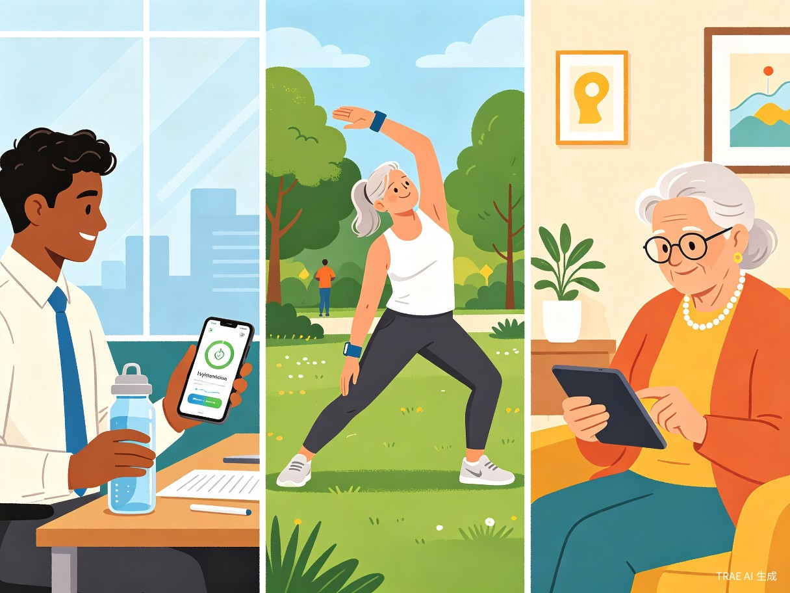
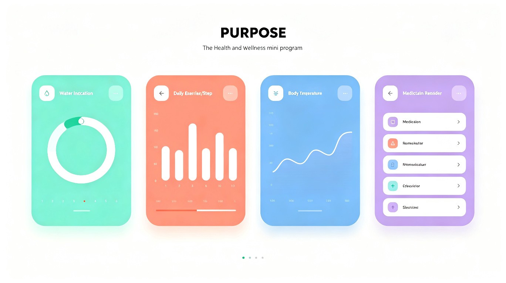

全龄段智能健康管理，让养生变得简单有趣
【社会服务赛道】轻养记——全龄段智能健康助手小程序轻养记是一款面向全年龄段用户的智能健康管理微信小程序，集体温记录、用药提醒、体重追踪、喝水打卡、运动记录于一体，让"脆皮年轻人"、职场中年人和注重养生的老年人都能轻松管理自己的健康，把养生变成日常小习惯。
当代"脆皮年轻人"熬夜加班、饮食不规律、久坐不动，身体亚健康问题频发；中年人工作家庭两头忙，健康管理有心无力；老年人想养生却缺乏科学工具。市面上的健康App要么功能单一，要么操作复杂，没有一个覆盖全年龄段、轻量易用、功能全面的健康管理入口。
身边的朋友常常自嘲是"脆皮打工人"——年纪轻轻却腰椎突出、肠胃脆弱、免疫力低下。大家不是不想养生，而是缺乏一个简单、有趣、能坚持的健康记录工具。我希望做一款像记账App一样轻松的健康小程序，让喝水、运动、测体温变成和刷朋友圈一样自然的事情。
基于微信小程序平台开发的全龄段轻健康管理应用，无需下载安装，打开即用。针对年轻用户设计趣味打卡和社交分享功能，针对中年用户设计数据分析和效率提醒，针对老年用户设计大字体模式和语音输入，真正做到一款产品，全家适用。

全年龄段用户在不同场景下使用轻养记管理健康
熬夜加班、饮食外卖、久坐不动，想养生但缺乏行动力，需要趣味激励和社交监督
工作家庭压力大，体检指标亮红灯，需要高效便捷的健康数据追踪和异常预警
注重日常保健，需要用药提醒和体征监测，偏好操作简单、字体清晰的应用
关心家人健康状况，希望远程了解父母或子女的健康数据，异常情况及时获知
记录体温用一个App，运动用另一个，喝水又用第三个，数据分散无法统一管理
传统健康工具枯燥乏味，缺乏激励机制，用户三天热度后就放弃记录
记录了很多数据但看不懂趋势，不知道自己的健康状况到底好不好
在外工作的子女无法实时了解父母的体温和用药情况，担心又无能为力
《"健康中国2030"规划纲要》明确提出要提升全民健康素养。轻养记通过降低健康管理的门槛，让"脆皮年轻人"提前建立健康意识，让中年人科学管理亚健康，让老年人便捷监测体征，真正实现全生命周期的健康关怀。据研究，养成健康记录习惯的用户，其健康行为改善率可提升60%以上。
将体温、体重、用药、喝水、运动五大健康维度整合在一个小程序中，用户无需在多个App间切换。智能提醒功能确保用户不会忘记关键健康行为，数据可视化让用户一眼看懂自己的健康状况。据统计，使用一体化健康工具的用户，健康管理时间成本降低70%。
轻养记小程序围绕五大核心功能模块设计，界面清新、操作流畅、全龄友好：

轻养记小程序五大核心模块：喝水打卡、运动记录、体温监测、用药提醒、体重追踪
根据体重和活动量智能推荐每日饮水目标，定时推送提醒，一键打卡记录，生成周/月饮水趋势图
支持跑步、瑜伽、骑行等多种运动类型，记录时长和消耗卡路里，生成运动周报，可与好友PK
手动输入或语音录入体温，自动生成日/周/月趋势折线图，异常体温自动标红预警
自定义服药时间和剂量，到点推送微信通知，服药后一键打卡，生成用药依从性报告
定期记录体重，可视化展示变化曲线，支持设置目标体重，自动计算BMI指数
邀请家人加入健康圈，互相查看健康数据，异常指标自动通知家属，全家一起养生
轻养记不仅是一个健康记录工具，更是一种生活方式的倡导。我们相信，健康管理不应该是一件沉重的事情，而可以是每天几分钟的轻松打卡，是家人之间的温暖互动，是看着自己越来越好的成就感。
无论你是"脆皮"还是"硬核"，轻养记都愿意陪伴你，把养生变成一件简单、有趣、能坚持下去的小事。让我们一起，从轻养开始，向健康出发。